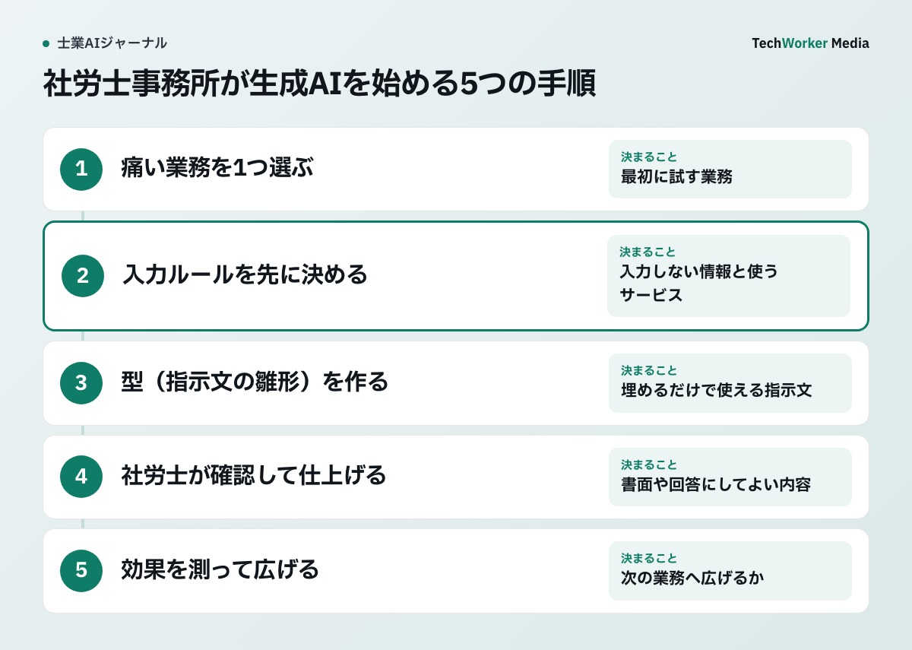
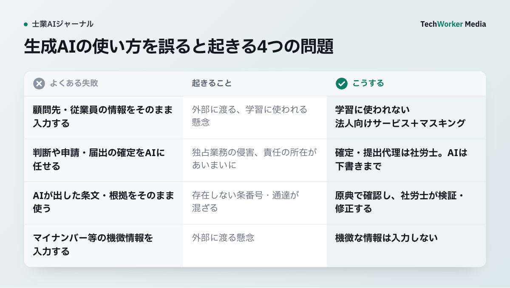

社労士の仕事で、生成AIはどの作業に効きますか？
就業規則や手続き書類の下書き、労務相談の論点整理など準備作業に効きます。判断と確定は社労士が行います。
社会保険労務士の仕事は、大量の文章と制度を読み、書き、調べ、まとめる作業の連続です。
顧問先の実態を聞き取り、就業規則や各種規程を整えます。入退社・社会保険の手続き書類を作り、労務相談の論点を整理し、議事録や顧問先への通知文を書きます。
生成AIが最も効くのは、この準備作業です。AIに任せられるのは、下書きと、要約・整理・下調べです。
本記事の運用では、労務上の判断、申請・届出の最終確認、顧問先への回答を社労士の確認へ戻します。資格者に限られる業務の範囲は、社会保険労務士法と案件の内容で確認します。
顧問先の業種、就業実態、既存規程、過去の書式といった文脈（コンテキスト）を渡すほど、AIは現場で使える出力を返します。
共通するのは、ゼロから書く作業や一から調べる作業を、直して仕上げる作業や裏を取る作業に変えることです。労務判断と最終確認は、必ず社労士が行います。
TechWorkerの支援では、どんな傾向が見えていますか？
本稿では、入力ルールと指示文の型を先に決め、継続して使えるかを確かめる運用を提案します。
株式会社TechWorkerは、上場企業を含む37社・2,500名の生成AI導入・活用を支援しています。
その支援を通じて、本稿では、入力ルールと指示文の型を先に決める運用を提案します。支援人数から、この運用の効果を算出したものではありません。
自社の業務文脈をAIが扱える形に整える設計が、活用の土台です。次の手順も、この考え方に沿っています。
社労士事務所は、生成AIをどんな手順で始めればよいですか？
痛い業務を1つ選び、入力ルールと指示文の型を決め、社労士が確認して仕上げる流れで始めます。
本文の従業員30名・小売業の例では、慶弔休暇の日数をAIに埋めさせません。未確定の条件を残したまま、社労士が顧問先の方針と既存規程を確認します。年次有給休暇の記載も、原典と対象者の働き方に照らして確認します。指示文が具体的でも、制度の適用まで自動で確定したことにはなりません。

始め方は、効果が見えやすい1つの業務から小さく試すのが現実的です。守秘義務に関わる仕事なので、入力ルールを先に決める順番を守ります。
- 痛い業務を1つ選びます。就業規則のたたき台づくり、手続きの案内文、労務相談の論点整理など、件数が多く時間を食っている作業に絞ります。
- 入力ルールを先に決めます。従業員や顧問先を特定する情報、マイナンバー等は、マスキングするか入力しません。入力データが学習に使われない法人向けサービスを使います。
- 型（指示文の雛形）を作ります。「どの顧問先・何を・どんな形式で」を埋めるだけで使える指示文を用意し、毎回ゼロから書かずに済ませます。
- 社労士が確認して仕上げます。AIの出力は必ず社労士が読み、法令・根拠・顧問先の実態を確認・修正してから、書面や回答にします。出しっぱなしにしません。
- 効果を測って広げます。1件あたりの所要時間や着手のしやすさが変わったかを確かめます。手応えがあれば、次の業務へ広げます。
手順3の例として、就業規則の条文のたたき台を作らせる場面を示します。就業規則や賃金規程、育児・介護休業規程の作成は、時間がかかる業務の代表格です。
骨組みづくりと初稿の言語化は、生成AIで時短しやすい部分です。条文の妥当性、法令適合、顧問先の実態との整合は、社労士が確認・修正してから提案します。
図：顧問先の条件を渡し、規程のたたき台だけをAIに作らせる例です。最終判断は社労士が行います。
生成AIの使い方を誤ると、どんな問題が起きますか？
守秘義務違反や、誤った規程・手続きにつながります。使い始める前に、4つの備えを事務所のルールにします。

社労士は、従業員の働き方や顧問先の労務リスクを左右する仕事です。便利さだけで導入すると、守秘義務違反や誤った規程・手続きにつながるおそれがあります。
使い始める前に、次の4点を事務所のルールとして決めておきます。
- 守秘義務。顧問先・従業員の情報が外部に渡る、学習に使われるといった懸念があります（社会保険労務士法の秘密保持）。入力データが学習に使われない法人向けサービスを選び、特定情報はマスキングします。機微な情報は入力しません。利用規約と職業上の守秘義務も先に確認します。
- 独占業務と社労士の最終責任。労務判断や申請・届出の確定をAIに代替させると、独占業務の侵害や、責任の所在のあいまい化が生じる懸念があります。判断・最終確定・提出代理は必ず社労士が行い、AIは下書き・整理・下調べにとどめます。
- ハルシネーション（条文・根拠の捏造）。存在しない条番号・通達・規程例を、自然な文章で生成することがあります。法令・通達・根拠条文は必ず原典で確認し、社労士が検証・修正してから使います。
- 従業員・顧問先情報と個人情報。個人情報やマイナンバー等の機微情報が外部に渡る懸念があります。機微な情報は入力しない運用を基本とし、自社の個人情報の取り扱い方針と法令を先に確認します。
生成AIは、社労士の判断の前の準備を速くする道具です。労務判断、申請・届出の確定、顧問先への責任ある回答は、肩代わりしません。
この線引きを最初に事務所で合意できているかが、安心して使えるかの分かれ目になります。
業務ごとのAIの使い方と期待できることは、どう違いますか？
規程、手続き書類、労務相談、制度改正の下調べ、議事録、言い換えの6場面で、準備作業を速くできます。
| 業務場面 | AIの使い方 | 期待できること |
|---|---|---|
| 就業規則・各種規程の作成 | 顧問先の条件をもとに規程の構成案・条文のたたき台を下書き | 白紙からの作成を減らし、顧問先ごとの調整に集中する |
| 手続き書類・届出のドラフト | ヒアリングメモから手続きの必要書類リスト・案内文を整形 | 準備の抜け漏れ確認を効率化し、着手を早くする |
| 労務相談の論点整理 | 相談内容を確認事項・関係する制度・必要資料に分解して整理 | 面談前の準備を短縮し、対話に集中する |
| 制度改正・助成金の下調べ | 論点に対する一次的な調べ物・確認すべき切り口の洗い出し | 調べ物の入口を早くする（根拠は必ず原典で確認） |
| 議事録・通知文 | 面談メモや文字起こしを議事録・顧問先向け通知文に整形 | 清書の手間を減らし、本来の業務に時間を戻す |
| 顧問先向けの言い換え | 専門的な制度説明を、経営者に伝わる平易な案内文に変換 | 伝わりやすさを上げ、説明のやり直しを減らす |
よくある質問
最初は、下書き、長い文章の要約、論点の整理など、社労士が必ず最後に確認する作業から始めます。就業規則・規程のたたき台、顧問先への制度改正の案内文、労務相談の論点整理、議事録の整形が向いています。効果が見えやすく、失敗してもやり直しやすいため、スモールスタートに合います。
たたき台づくりには有効ですが、そのまま使うのは避けてください。生成AIは、規程の条文や根拠条文を自然な文章で誤って出力すること（ハルシネーション）があります。法令や顧問先の実態に合わない記載が混ざるおそれがあります。AIには構成案と条文のたたき台までを任せます。内容の妥当性、法令適合、顧問先ごとの調整は、社労士が確認・修正してから提案します。
社会保険労務士法の守秘義務と、自社の個人情報の取り扱い方針を確認してください。入力データが学習に使われない設定の法人向けサービスを選びます。従業員や顧問先を特定する情報、マイナンバー等は、マスキングするか入力しません。こうした運用ルールを、使い始める前に決めることが前提です。
なくなりません。AIが担うのは、下書き、要約・整理、調べ物の入口といった準備作業です。労務判断、申請・届出の最終確定、提出代理、顧問先への責任ある回答は、社労士にしかできない領域です。準備を速くした分、判断と顧問先対応に時間を充てるのが本来の使い方です。
次の一歩は何から始めればよいですか？
件数の多い業務を1つ選び、入力ルールを決めて、社労士の確認込みで試すことから始めます。
- 就業規則のたたき台、手続きの案内文、労務相談の論点整理から、1業務を選びます。
- 従業員・顧問先を特定する情報とマイナンバー等の入力ルールを決めます。
- AIの下書きを社労士が確認して仕上げ、所要時間の変化を確かめます。
社労士事務所の「どこにAIを入れるか」の設計は、TechWorkerが伴走します。検討段階のご相談だけでも歓迎です。